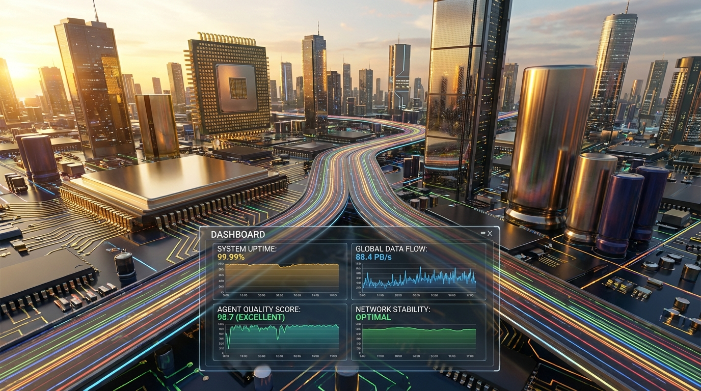

.jpg)
Unified Framework for Advanced Agentic Orchestration
An expansive architectural framework for a "Mega Agentic System". Moves beyond single-prompt interactions toward multi-pattern orchestration via Google’s Gemini and Imagen models.
01 // Agent Modes
The MegaAgenticSystem intelligently selects operational modes based on task complexity.
Tracks performance metrics per mode (quality, success rate).
.jpg)
02 // Code Lifecycle
Comprehensive suite for development from generation to safe execution.
- Structured Generation: Metadata, complexity assessments, dependency lists.
- Review & Refactoring: Security analysis and performance bottleneck identification.
- Lifecycle Tools: Translation (Python to TS), Logic Summaries, Auto-generated Unit Tests.
- Safe Execution: Timeout protection with stdout/stderr capture.
.jpg)
03 // Doc & Analysis
High-fidelity document generation ranging from summaries to 5,000+ word reports.
1. Scout Agent maps "treasure map" of files.
2. Planner Agent synthesizes "master blueprint".
3. Builder Agent executes with high precision.
RAG System: Uses vector embeddings (gemini-embedding-001) to index and retrieve context, minimizing hallucination.

04 // System Arch
Deployed as a unified platform via FastAPI integration.
Scans datasets for missing values. Generates context-aware questions to fill data gaps using surrounding row values.